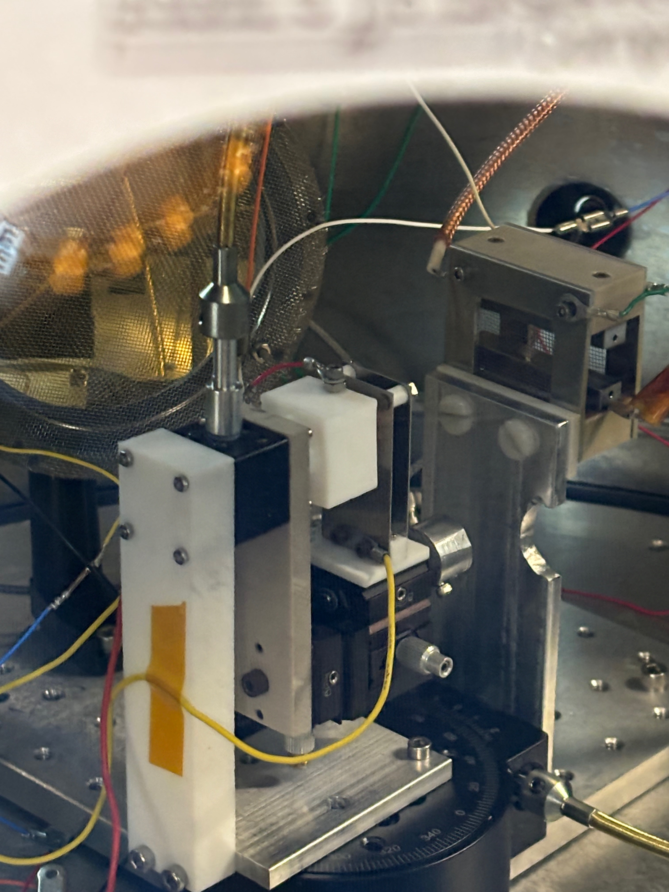
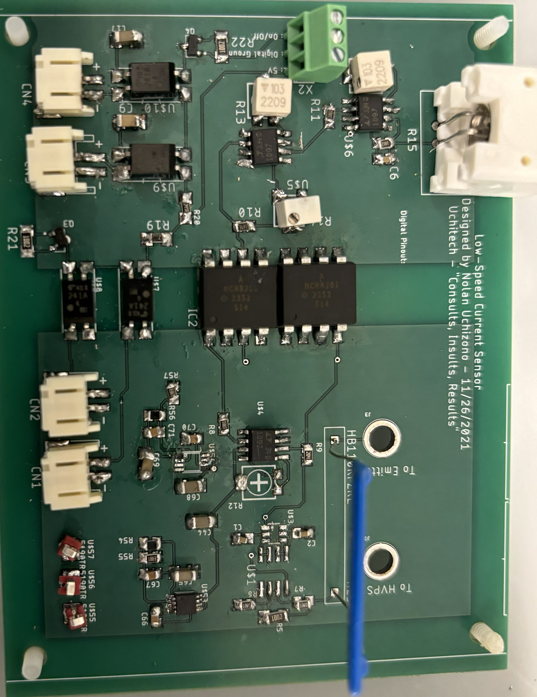
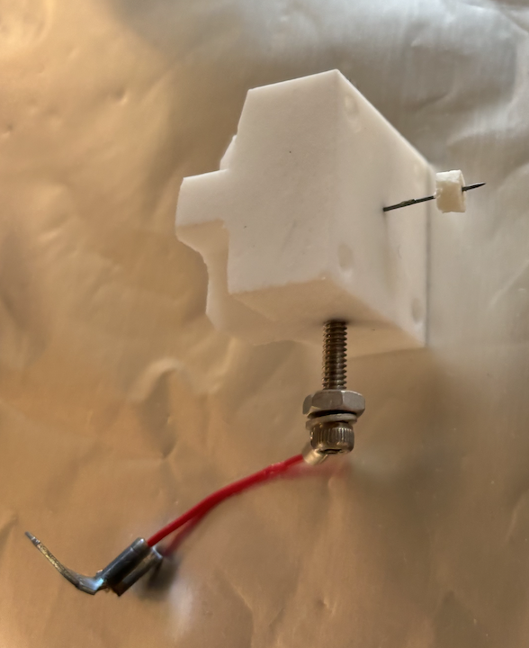

As a research assistant for ASTRA Lab, I tested and analyzed novel nanoparticle fluids in electrospray experiments to determine whether the propellants could indeed last 10 times as long as current technology. The tests were completed by creating electric fields at very high voltages that pulled apart the nanoparticles into their cations and anions, and shot the attractive particles through an aperture in stainless steel plates. By measuring the current at which the particles hit a conductive plate through a high voltage sensing circuit, we were able to determine the thrust and specific impulse of these nanoparticles. The testing was completed in a vacuum chamber, so precision was key. That is why I implemented a double goniometer setup, which allowed for rotation of the emitter of the nanoparticles.


